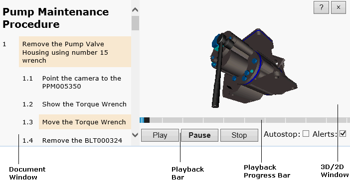

The user interface of procedure publication consists of two workspaces: Document window and 3D/2D window. Each workspace has its own control elements described below. Pay attention that the appearance of publication and the availability of some commands depend on the specification component used for the publication.
|  |
The Document window displays a document created in accordance with the chosen standard. The document provides a step-by-step procedure for completing a specific technical task. The procedure steps can contain some interactive elements. Click the elements to see the corresponding moment of the procedure in the 3D window or the corresponding 2D image in the 2D window.
The 3D window provides a 3D representation of the procedure described in the Document window. In the 3D window the user can play back the procedure using the Playback bar and navigate using the mouse buttons. A locator (axis tripod) at the top right corner of the 3D window allows determining the orientation of the 3D model relative to the axes.
If the 3D window is closed when you first open the publication, click the corresponding interactive element in the Document window.
Buttons for controlling the procedure playback in the 3D window.
| Command | Purpose |
|---|---|
| Play | Starts the playback of the procedure if it is stopped or paused. |
| Pause | Stops the playback at the current step. |
| Stop | Stops and rewinds the current step to the beginning. |
| Previous/Next Step | Moves the playback to the previous/next step. |
| Autostop | If selected, automatically stops the procedure playback after each step. |
| Alerts | If selected, shows the alerting messages of the procedure during the playback. |
| Freeze Viewpoint | If selected, locks the camera to the current view, thus preventing the camera's movement during the procedure playback. |
| Speed | Allows adjusting a playback speed. |
Shows the playback progress. Clicking the bar allows choosing the desired moment of the procedure.
| To | Do This |
|---|---|
| Zoom in/out | Rotate the mouse wheel forward or backward. |
| Pan | Move the mouse with the mouse wheel pressed. |
| Spin | Move the mouse while holding down its left button. |
| Set rotation center | Holding the ALT key, click any item in the 3D window. The picked point is used as the center of rotation. |
Right-click anywhere in the 3D window to access the context-sensitive menu.
| Command | Purpose |
|---|---|
| Properties | Allows you to select a rendering mode. |
| About | Shows the versions of publication, 3D viewer and 2D viewer. |
The 2D window displays vector and raster images associated with the procedure described in the Document window. The 2D window is closed when you first open the publication. To open the 2D window, click a 2D image hyperlink in the Document window. Right-click in the 2D window to access the available context-sensitive commands. The commands depend on the 2D viewer used in the 2D window.
| To | Do This |
|---|---|
| Pan | Move the mouse while holding down its left button. |
| Zoom | Rotate the mouse wheel forward or backward. |
| Help | Provides a help system for the user interface. | |
| Close | Closes the 3D/2D window. |